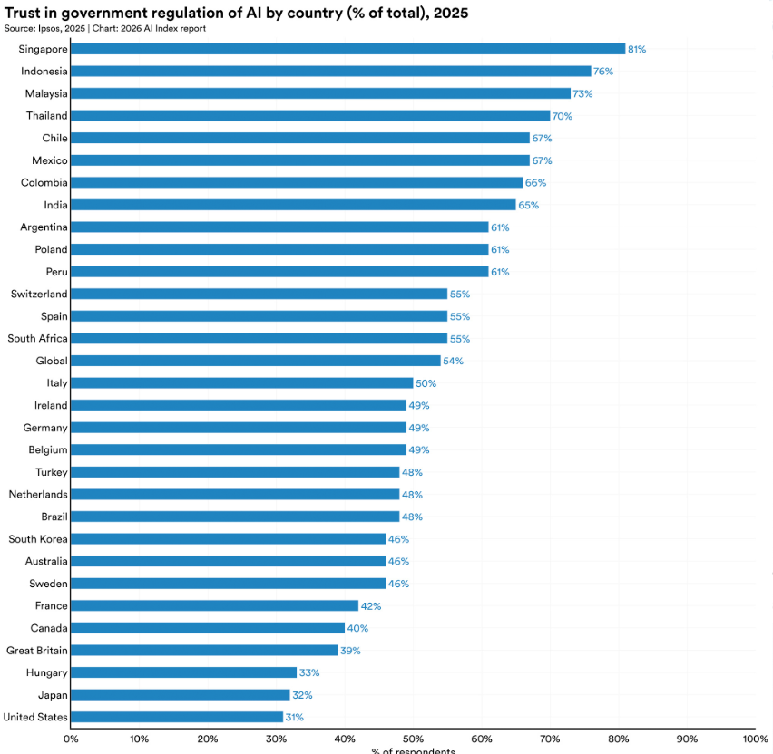

While the mathematical foundations of AI were laid out as far back as 1949 as mentioned in the first blog post of this series, the awareness of AI among general populations has only come within the past three years. In these few years, it has been an extremely controversial topic and has even single handedly affected the level of optimism with which people look to the future. The public’s perception of AI is vital to a smooth transition to an AI powered country. If the public resist, this will make AI adoption much harder and slower. Here I will be looking at what the public think and why that may be. On top of that, I will be looking at how AI affects our thinking in the first place, with its ability to impede cognitive ability, as well as our mental health.
There are a lot of people who fear what AI will do. Talking to friends and looking online, I felt the general consensus to be a negative one. Losing jobs and the end of the humanity are typical fears. Despite this, the surveys done on public opinion (which I will get more into later) seem to suggest that the masses are not as negative as I initially expected, probably due to the bias of the loudest minority online (will also go over this later).
Doomerism was present among some individuals within inner circles before AI became mainstream. Eliezer Yudkowsky is said to be the originator of “AI doomerism” back as far as the early 2000s! However, the first planted seed that really grew was with the 2014 book “Superintelligence”, authored by Nick Bostrom. Soon after, big figures in the science community such as Elon Musk, Bill Gates and Stephen Hawking started to publicly express concern. After AI’s popularity initially blew up, Elon Musk was a fundamental catalyst to spreading the message that AI could go horribly wrong if not executed properly. On top of this, Geoffery Hinton and Yoshua Bengio, who have been in the space since the late 80s, both publicly expressed deep concerns with AI going wrong. Geoffery Hinton even left his role at Google just so he could freely talk about his concerns with AI. On top of this, in May 2023, the Center for AI Safety said that mitigating AI extinction risk should be a global priority alongside pandemics and nuclear war, a statement signed by the leaders of OpenAI, Google, and Anthropic, alongside Geoffery Hinton and Yoshua Bengio. So many leaders taking this so seriously, with Hinton even quitting his job just to spread the message, this naturally spread anxiety about the future of AI.
Ultimately, this massive wave of fear died off by 2024-2025, as the narrative of racing China to AGI dominated the doomerism narrative. That’s not to say the fear and pessimism is gone, but there was a notable peak which has now diminished from outright fear to an underlying pessimism. Arguably, this shift in narrative was manufactured rather than natural. That is to say, media and news changed people’s opinions, rather than a change in people’s opinions being reflected in the news. Likewise, it is actually hard to tell whether what you see is what people think, whether it’s what someone wants you to think, or if it’s what a loud minority think (again, more on this later).
To get around this issue, there have been a few global surveys done on the public perception of AI. This should minimise selection bias, particularly when we focus on studies with participants from a wide variety of countries. Firstly, according to several reports done evaluating general optimism to AI, it looks like Asian counties in general are much more open to AI and trust AI more. The IPSOS 2025 study includes a graph for the % of the population of a country which trust their government with AI (so merging government trust and AI trust in one), as can be seen below.

There is a huge variance when splitting by country. The UK and US are at the very bottom on this list, whilst Singapore, Indonesia and Malaysia are top three. It seems the reason is not simple, but a different outlook on tech of viewing it as essential to a country as well as eastern narratives perhaps pushing the “we could all die” narrative could be explanations to this stark disparity. Interestingly, Japan is an outlier for Asian countries, showing up as the second lowest in trust of all the countries in the graph. This is due to Japan’s culture having a high emphasis on reliability rather than innovation, with the country being notorious for resisting change that could be seen as unreliable. Due to the aversion of AI, this has also led to a shortage of talent in the field. 26.7% of Japanese citizens have used generative AI before, vs 80% in China who are notoriously pushing an aggressive agenda of country wide AI adoption.
I think this is quite interesting how different cultures and spread narratives can affect citizen perceptions so much. It shows how much the public is swayed to their viewpoint, even with the existence of such a vast homogenised source of internet as the internet! Ultimately, this is genuinely a difficult question on whether we should be optimistic or not.
In my opinion we should be cautiously optimistic, and I’d say I’m more bullish than the average westerner, and believe Asia have a more appropriate attitude towards AI given the admittedly limited information we have at hand, and this could even play in favour of successful adoption by these governments with the people on their side. I think a mild psychosomatic affliction in the west could potentially end up being another obstacle in this perilous journey to AI.
As with any topic, especially politics, the news plays an incredibly large role in shaping perceptions. Much to the detriment of the general public in my opinion. AI is very much not an exception to this rule, and the usual mechanism that immediately follows from profit maximization has led to malicious misinformation and hyperbole. The short of this mechanism is that evoking emotion is the most effective way to get clicks, and clicks is how media makes money since the more people looking at their page, the more people looking at the ads on that page, and so the more advertisers will pay. This is true for YouTube, online news outlets and anything else you can think of which uses the internet as its medium for discovery.
On YouTube, there is such a big rabbit hole of content “exposing” AI and why there is a bubble or why the world is going to end in a year or why it destroys the environment and why the CEOs of these companies are insane money hungry maniacs. It’s all grounded in truth, then stretch 10x because again, these people know precision of fact does not sell because it does not evoke emotion.
This is especially true with timelines on predictions of the future. There are people scrambling for attention via an embellished shortening of timelines and drastic supplementary pictures of the future. While I think it is hopeless to educate the majority of the general public due to their lack of diligence in consuming information, ultimately governments, capitalists and technologists who are behind the development and implementation all seem to desire pushing forward in unison (maybe with the exception of some technologists). Whether this is the right move, time will tell. But regardless of the outcome, there is a lot of crap being spewed on the internet, as usual. While timelines are the main aspect which is exaggerated in my view, you can find embellishments among all aspects.
It is essential for people to take this content with a pinch of salt and do their own research. Unfortunately, the majority do not do this. AI is now big enough to be at mercy to hearsay of the average person who does not make their own opinion and just regurgitates the first line of logic that caught their heart and to stay loyal to their side to scratch their tribal wiring provided by evolution. Such is our polarised nature at present.
AI allows us to offload our cognitive abilities when completing tasks reliant on our cognition. Unfortunately, the brain very much has a “use it or lose it” aspect to it, meaning this actually affects our brain’s capability to function properly. There was a study done, and a paper called “Your Brain on ChatGPT” on this. There were three groups. One group wrote an essay using AI, one wrote an essay without using google search, and the final group wrote the essay using neither. The conclusion was that while ChatGPT improved the work output, it caused a significant decrease in neural activity and a decrease among certain connections in the brain. The ability to recall what was in the essay and the general understanding of what was written was also significantly decreased among the group that used AI. In the paper, this decrease in cognitive function is dubbed “cognitive debt”.
This result is pretty startling. Not only did the brain scans show a difference, but demonstrably when questioned about their essay lack of recall and understanding makes you realise that output no longer qualifies for understanding. To quote the paper directly: “The convenience of instant answers that LLMs provide can encourage passive consumption of information, which may lead to superficial engagement, weakened critical thinking skills, less deep understanding of the materials, and less long-term memory formation”.
Imagine what this could do to children and teenagers completing assignments with the help of AI. Will this decrease in recall and understanding lead to a generation of dumber adults and in turn affect their ability to help prop up society as a workforce? While I don’t believe the study covers this, I could so easily believe, and in fact am convinced, that the use of AI has negative impacts on your attention span. The ability to get so much with so little effort is bound to, given how much the internet already demonstrably does so to our brains.
The paper proposes the following ways to mitigate the cognitive debt that AI causes: Firstly, use AI for brainstorming or drafting, but then rewrite and revise the work in your own words. Secondly, use AI to research or summarize, rather than to generate the final product (feel like this one is obvious, do not just copy and paste what ChatGPT says). Finally, ensure the brain is still doing the majority of critical analysis. Ultimately, we should be using AI as an aid, not a shortcut.
The effects of AI on mental health is a very mixed bag, very much depending on how intelligently it is used.
The positive effects can be experiences through using AI as a free 24/7 therapeutic tool. Therapy is very expensive and while obviously a genuine therapist is far better and should always be the first resort when possible, having a chat bot to talk through your problems is definitely better than nothing, especially for people who do not have anyone else to talk to, whether that be from the issue being too personal or being some social taboo, or if the person struggles to make friends and would be extremely lonely otherwise.
The negative effects can come from a few ways. First off is what is called “AI psychosis”. This is where an AI model steers you into rogue thought patterns, from delusion to grandiosity. This typically requires very heavy usage of chat bots. This has led to people, even with no previous mental health issues, ending up in psychiatric wards. The fact that this has happened to otherwise normal, mentally stable people is quite jarring. Rather than hitting a vulnerability, it could have happened to anyone! With hindsight, LLMs now typically have guardrails that try their best to prevent this from happening. Not only is it awful for their customers, but it’s a PR disaster, so we know that is motivation enough for these companies to make sure it does not happen in the future!
Another negative effect that could potentially come is from outsourcing socialising to AI chatbots. While this could be a positive in the short term or maybe for specific people, long term this could be very dangerous. Disincentivising people to go outside and talk to real people could have real impacts not just on their social skills (like mentioned earlier, the brain is very much use it or lose it and this goes for social skills too!), but also their mental health when they are not actually speaking to people for extended periods of time. A chatbot can only partially fill the hole, and missing out on potential connections due to using this chatbot could really negatively impact people. All this holds true to an even greater degree when it comes to romantic relationships, which I will get to in the following point.
Another issue is its impact on relationship expectations. AI partners are an extremely big market, and on top of the issues mentioned in the previous point, these AI partners provide a relationship where the bot is completely submissive, never argues back and always agrees with you. This can cause unrealistic expectations if they ever look for a real partner or even worse, it completely puts them off looking for a real partner. I came across a post on reddit about an 18-year-old whose partner was “cheating” on them with an AI partner and was so addicted to this AI partner that they would get annoyed if they even tried to have a conversation with them, the annoyance coming from interrupting the conversation with the chatbot. Completely insane! This is also a nice transition to my next point.
The next reason is these chatbots could potentially become quite addictive. Much like social media, there is something addicting about speaking to a chatbot that is (at least in some ways) hyper intelligent and that can give you the answer to anything instantaneously. Especially if it is emotionally validating you while doing all this, and even more especially if it is mimicking the function of a romantic relationship and fulfilling some needs, even if not fully. This includes, linking back to a prior point I made, using it just to converse with something with human like reasoning at any time you want.
Given the recent under 16s ban to social media in Australia for reasons that I feel could be attributed to AI as well, it makes you wonder whether a similar ban could be seen for AI if this social media ban proves popular (rather than successful, unfortunately) or if there will be some undiscovered legislative hypocrisy that keeps AI alive and social media stifled, even if only for kids. The banning of AI for kids is not something I have heard discussed, perhaps because the technology is newer than social media, and maybe would need a decade of data of demonstrable decadence to see grounds for similar legislation to take place.
We see from these points that, while AI can provide comfort for people, it can also make people lazy in seeking out socialising as their social skills decay in isolation and potentially even cause addiction!
The perception of AI is vastly varied and seems to be highly influenced by what culture and societal norms point towards. The polarised present we find ourselves in has not spared AI unfortunately. Ultimately, the quality of information varies, as well as the degree to which each person is informed.
If used lazily, AI can also greatly decrease the amount a person learns, and even their general cognitive ability in the first place. This could especially be detrimental in the case of using AI for school teaching and even students using AI to complete assignments.
AI could help people’s mental health by giving someone free access to someone to talk to whenever they want and potentially (presumably to a limited extent) even work through some problems as well! On the flip side, AI could be addictive, disincentivise people to go make platonic and romantic relationships, get people used to a submissive chatbot that never argues. AI is a very powerful tool that can do a lot of good if used correctly, and a lot of bad if used incorrectly.
Media like YouTube, TikTok and anything facilitating “doomscrolling” already lower attention spans, and AI has the potential to push this even further. Likewise, these same factors are known to have negative impacts on mental health, with Australia notably banning social media for under 16s. With AI potentially doing the same, who knows if a similar ban could be seen in the next decade or so!